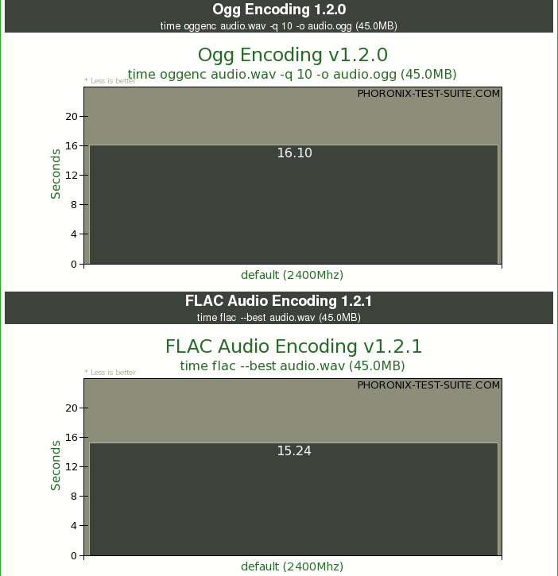
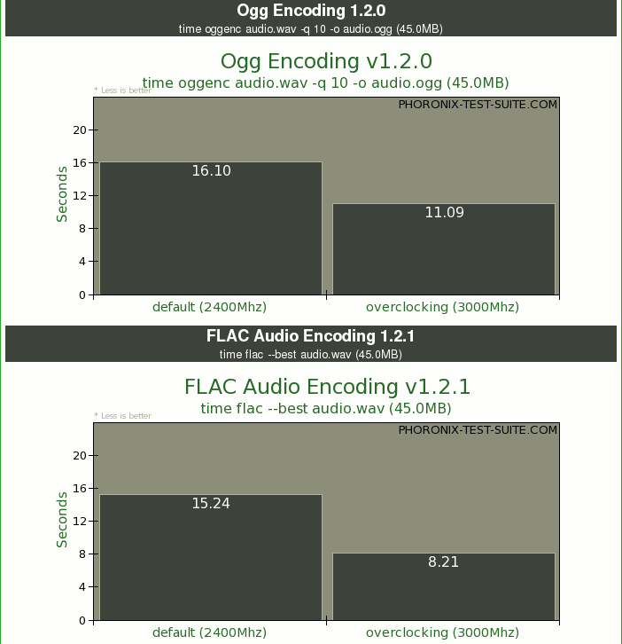

Phoronix Test Suite
Dieser Artikel wurde für die folgenden Ubuntu-Versionen getestet:
Ubuntu 16.04 Xenial Xerus
Ubuntu 14.04 Trusty Tahr
Zum Verständnis dieses Artikels sind folgende Seiten hilfreich:
Während es für andere Betriebssysteme eine ganze Reihe von Benchmarkprogrammen gibt, war das Messen der Systemleistung unter GNU/Linux bislang etwas mühsam. Michael Larabel hat mit der Phoronix Test Suite  (PTS) eine in PHP geschriebene Benchmarksuite ins Leben gerufen, welche es auf einfache Weise erlaubt, reproduzierbare Leistungsmessungen durchzuführen. Scriptgesteuert werden frei verfügbare Benchmarkwerkzeuge, definierte Standardvorgänge wie Media-Encoding und Kompiliervorgänge oder Spiele-Timedemos ausgeführt.
(PTS) eine in PHP geschriebene Benchmarksuite ins Leben gerufen, welche es auf einfache Weise erlaubt, reproduzierbare Leistungsmessungen durchzuführen. Scriptgesteuert werden frei verfügbare Benchmarkwerkzeuge, definierte Standardvorgänge wie Media-Encoding und Kompiliervorgänge oder Spiele-Timedemos ausgeführt.
Die Ergebnisse können ansprechend visualisiert im Webbrowser betrachtet werden und lassen sich zum Vergleich mit Ergebnissen anderer Anwender in die eigens bereitgestellte Online-Datenbank PTS Global hochladen. Die Phoronix Test Suite selbst ist Freie Software unter der GNU GPL3, zur Durchführung einiger Testprofile wird aber auch unfreie Software aus dem Netz nachgeladen.
Installation¶
Die Benchmarksuite ist ab Ubuntu 9.04 in den Paketquellen enthalten. Es muss das folgende Paket installiert werden [1]:
phoronix-test-suite (universe)
 mit apturl
mit apturl
Paketliste zum Kopieren:
sudo apt-get install phoronix-test-suite
sudo aptitude install phoronix-test-suite
Funktionsweise¶
Die Phoronix Test Suite beinhaltet Profile für unterschiedliche Einzeltests, wobei ausschließlich externe Programme zum Einsatz kommen. Wird ein Test zum ersten Mal angestoßen, so werden die benötigten Programme und Daten automatisch aus dem Netz nachgeladen und im Verzeichnis ~/.phoronix-test-suite/installed-tests abgelegt. Innerhalb der Phoronix Test Suite werden Einzeltest als benchmark und vorgegebene Kombinationen von Einzeltests als suite bezeichnet. Eine suite fasst ähnliche Benchmarks zu einer Abfolge zusammen und dient dem besseren Komfort. Mit universe steht zudem eine umfassende Benchmarksuite zur Verfügung, die eine Auswahl hinreichend funktionstüchtiger Einzeltests beinhaltet.
Achtung!
Einige der Benchmarks aus universe sind freie Spiele, die sich auch unabhängig von der Phoronix Test Suite starten lassen. Bitte keinesfalls die Konfiguration verändern, das könnte die Testergebnisse verfälschen!
Anwendung¶
Allgemeine Benutzung¶
Hinweis:
Für die Testumgebung müssen Daten in großem Umfang aus dem Internet nachgeladen werden. Das Transfervolumen überschreitet schnell viele hundert Megabyte. Für die Suite universe zum Beispiel werden weit mehr als 4 GiB freier Speicherplatz im Home-Verzeichnis benötigt.
Die Phoronix Test Suite wird auf der Kommandozeile bedient und über Optionen und Optionsparameter gesteuert. In einem Terminal [3] verschafft man sich zunächst einmal durch Aufruf von phoronix-test-suite ohne weitere Parameter einen Überblick über die vorhandenen Optionen.
phoronix-test-suite
Im Folgenden nun tabellarisch eine Auflistung und kurze deutsche Erklärung der vorhandenen Optionen nebst möglicher Parameter.
| Optionen für phoronix-test-suite | ||
| Option | Parameter | Erklärung |
| install | <suite OR benchmark> | Alle zur Durchführung einer suite oder eines einzelnen benchmark benötigten Programme und Dateien werden aus dem Netz nachgeladen und unter ~/pts-benchmark-env abgelegt. |
| install-dependencies | <suite OR benchmark> | Installiert externe Abhängigkeiten mit Hilfe der Paketverwaltung (experimentell). |
| run | <suite OR benchmark> | Eine suite oder eine einzelner benchmark werden ausgeführt. Die benötigten Programme und Dateien müssen zuvor mittels install vorbereitet worden sein. |
| benchmark | <suite OR benchmark OR saved file> | Eine Kombination aus install und run, alle zur Durchführung einer suite oder eines einzelnen benchmark benötigten Programme und Dateien werden aus dem Netz nachgeladen und unter ~/pts-benchmark-env abgelegt. Direkt im Anschluss wird die suite oder der einzelne benchmark ausgeführt. |
| merge-results | <Saved File 1 OR Global ID>, <Saved File 2 OR Global ID>, <Save To> | Die Ergebnisse verschiedener Testläufe werden zusammengeführt. Dies ist nützlich, um Vergleiche unterschiedlicher Systeme oder Systemkonfigurationen anzustellen und als Gesamtergebnis visualisiert zu bekommen. |
| remove-result | <Saved File> | Das Ergebnis und alle ihm zugeordneten Dateien werden gelöscht. |
| list-tests | - | Zeigt eine Übersicht der vorhandenen Einzeltests. |
| list-suites | - | Zeigt eine Übersicht der vorhandenen Testkombinationen. |
| list-saved-results | - | Zeigt eine Übersicht der gespeicherten Ergebnisse. |
| upload | <Saved File> | Lädt ein Ergebnis in die globale Online-Datenbank. |
| build-php | - | Noch nicht implementiert. |
Empfehlenswert ist ferner, sich ein wenig mit den vorhandenen Einzeltests und ihren Bezeichnungen vertraut zu machen:
phoronix-test-suite list-tests
Um nicht zahllose Einzeltests manuell durchführen zu müssen, kann man sich der vordefinierten Benchmarkabfolgen bedienen. Hierzu benötigt man die genaue Bezeichnung der gewünschten suite:
phoronix-test-suite list-suites
Mit universe steht zudem eine umfassende Benchmarksuite zur Verfügung, die eine Auswahl hinreichend funktionstüchtiger Einzeltests beinhaltet.
Die wesentliche Funktionalität besteht natürlich in der Durchführung und Visualisierung von Testläufen. Die einfachste Möglichkeit hierfür stellt ein Aufruf von phoronix-test-suite gefolgt von der Option benchmark dar. Als abschließender Parameter wird die Bezeichnung eines Einzeltests oder einer Benchmarksuite benötigt. Um also beispielsweise die umfassende Benchmarksuite universe zu durchlaufen, ergibt sich folgender Kommandozeilenaufruf:
phoronix-test-suite benchmark universe
Beispieldurchlauf¶
Hinweis:
Dieser Beispieldurchlauf wurde mit Phoronix Test Suite 0.2.1 durchgeführt. Die Bildschirmausgaben aktualisierter Versionen weichen aufgrund der raschen Programmentwicklung möglicherweise bereits von den nachfolgenden Beispielen ab.
In diesem Beispieldurchlauf soll ein Vergleich zwischen einem System im Auslieferungszustand und mit übertakteter CPU anhand der Audio-Encodingtests gezeigt werden. Hierfür wird der Prozessortakt des Testsystems nach dem ersten Durchlauf von 2400Mhz auf 3000Mhz angehoben und anschließend ein zweiter Durchlauf gestartet. Darüber hinaus werden die beiden Ergebnisse auf einfache Art und Weise zu einem Gesamtergebnis zusammengeführt und in die Online-Datenbank hochgeladen.
Zunächst müssen die benötigten Programme und Dateien aus dem Netz nachgeladen und anschließend die Audio Encoding Test Suite gestartet werden. Die Option benchmark vereint praktischerweise beide Schritte. Als Parameter wird die Bezeichnung der Audio Encoding Test Suite angegeben, also audio-encoding.
phoronix-test-suite benchmark audio-encoding
Die nachfolgende Frage, ob die Ergebnisse gespeichert werden sollen, bejaht man mit Y .
Would you like to save these benchmark results (Y/n)? y
Nun wird man aufgefordert, einen Namen einzugeben, unter dem das Ergebnis gespeichert werden soll, in diesem Beispiel audio-encoding-12-04-08. Anschließend wird noch eine Bezeichnung zur eindeutigen Identifikation des Durchlaufs benötigt. Da in diesem Beispiel ein Vergleich zwischen Standardtaktraten und übertakteter CPU erfolgen soll, wird für den ersten Durchlauf default (2400Mhz) gewählt.
Enter a name to save (or merge) these results: audio-encoding-12-04-08 Enter a unique identifier for distinguishing this series of tests: default (2400Mhz)
Nachdem die Audio Encoding Test Suite durchgelaufen ist, kann die nachfolgende Frage mit Y bejaht werden. Daraufhin wird automatisch der Webbrowser gestartet, wo das Ergebnis betrachtet werden kann.
Do you want to view the results in your web browser (y/N)? y
Das Ergebnis befindet sich in Form einer XML-Datei unter ~/pts-test-results und kann jederzeit erneut mit Hilfe eines Webbrowsers geöffnet werden. Hier ein Ausschnitt aus dem Test audio-encoding-12-04-08 beim Durchlauf mit der Bezeichnung default (2400Mhz).

Zuletzt wird die Frage nach dem Hochladen des Ergebnisses in die Online-Datenbank mit N verneint, da dieser Schritt erst mit dem Gesamtergebnis beider Durchläufe erfolgen soll.
Would you like to upload these results to PTS Global (y/N)? n
Der erste Durchlauf ist damit abgeschlossen.
Anschließend wurde der Prozessortakt von 2400Mhz auf 3000Mhz angehoben und ein neuerlicher Durchlauf der Audio Encoding Test Suite wird gestartet. Damit das neue Ergebnis automatisch mit dem vorhandenen zusammengeführt wird, muss einfach der selbe Name, zur Unterscheidung aber ein neuer Bezeichner angegeben werden. In diesem Beispiel also erneut audio-encoding-12-04-08, aber als Bezeichner nun overclocking (3000Mhz).
phoronix-test-suite benchmark audio-encoding
Would you like to save these benchmark results (Y/n)? y Enter a name to save (or merge) these results: audio-encoding-12-04-08 Enter a unique identifier for distinguishing this series of tests: overclocking (3000Mhz)
Das Ergebnis beinhaltet nun zwei Durchläufe der Audio Encoding Test Suite, die übersichtlich in Form von Diagrammen gegenübergestellt werden.
Do you want to view the results in your web browser (y/N)? y

Abschließend wird dem Hochladen des Ergebnisses in die Online-Datenbank PTS-Global mit Y zugestimmt.
Would you like to upload these results to PTS Global (y/N)? y Results Uploaded To: http://global.phoronix-test-suite.com/index.php?k=profile&u=puntarenas-548-11236-341
Der Beispieldurchlauf ist nun abgeschlossen und das Ergebnis findet sich unter der Global ID: puntarenas-548-11236-341 weltweit zugänglich in der Online-Datenbank PTS Global . Die jeweilige Global ID wird im Anschluss an die Übermittlung eines Testergebnisses in Form eines Links ausgegeben, der auch direkt im Webbrowser geöffnet werden kann.
 Übersichtsartikel
Übersichtsartikel- Erstellt mit Inyoka
-
 2004 – 2017 ubuntuusers.de • Einige Rechte vorbehalten
2004 – 2017 ubuntuusers.de • Einige Rechte vorbehalten
Lizenz • Kontakt • Datenschutz • Impressum • Serverstatus -
Serverhousing gespendet von